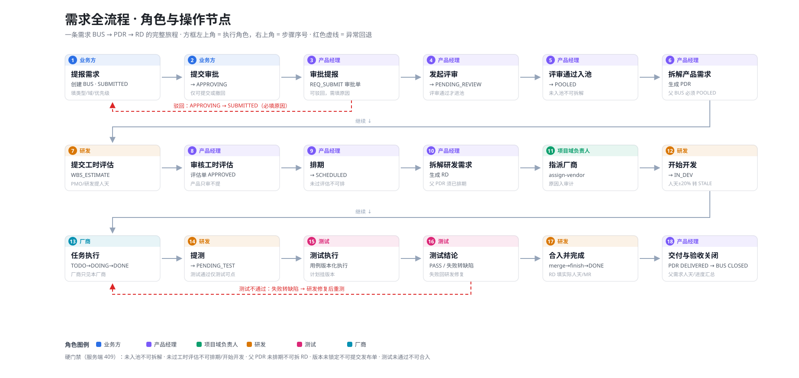

一条需求从「业务方提报」到「验收关闭」的完整旅程：18 个操作节点、8 类角色、8 个硬门禁错误码。 图与表都按当前代码（
main）的实际状态机与权限矩阵绘制，不是设计稿。

（位图版：docs/teamflow/diagrams/requirement-flow.png）
| # | 角色 | 操作 | 系统接口 / 动作 | 状态变化 | 硬门禁 |
|---|---|---|---|---|---|
| 1 | 业务方 / 二级企业 | 提报业务需求 | POST /api/req/requirements（type=BUS） |
→ SUBMITTED |
必填：业务域、优先级、期望交付 |
| 2 | 业务方 | 提交审批 | POST /{id}/actions {action:submit} |
SUBMITTED → APPROVING |
只能提交或撤回（业务方无审批权） |
| 3 | 产品经理 | 审批提报 | POST /approvals/tasks/{taskId}/actions {APPROVE/REJECT} |
APPROVING → PENDING_REVIEW / 驳回回
SUBMITTED |
驳回必须填原因，进动态与审计 |
| 4 | 产品经理 | 发起评审 | POST /{id}/actions {action:review_start} |
状态不变，生成 REQ_REVIEW 审批实例 |
同一需求不允许并行多张评审单 |
| 5 | 产品经理 | 评审通过入池 | POST /{id}/actions {action:review_pass} |
PENDING_REVIEW → POOLED |
评审实例必须 APPROVED，否则
409 REVIEW_APPROVAL_REQUIRED |
| 6 | 产品经理 | 拆解产品需求 | POST /{id}/decompose {type:PDR} |
生成 PDR：PENDING_ANALYSIS |
409 PARENT_NOT_POOLED（父 BUS 必须已入池） |
| 7 | 研发 / PMO | 提交工时评估 | POST /{id}/estimate {estimateDays,note} |
生成 WBS_ESTIMATE 审批单 |
需要
req:deliver；产品经理只审不提 |
| 8 | 产品经理 | 审核工时评估 | POST /approvals/tasks/{taskId}/actions {APPROVE} |
评估单 APPROVED |
0.5 天精度；驳回需原因 |
| 9 | 产品经理 | 排期 | POST /{id}/actions {action:schedule} |
PDR：PENDING_ANALYSIS → SCHEDULED |
409 ESTIMATE_NOT_APPROVED；人天改动 >±20% 评估单转
STALE 即失效 |
| 10 | 产品经理 | 拆解研发需求 | POST /{id}/decompose {type:RD} |
生成 RD：TODO |
409 PARENT_NOT_SCHEDULED（父 PDR 须
SCHEDULED/IN_DEV） |
| 11 | 项目域负责人 | 指派厂商 | POST /{id}/assign-vendor {vendorId,reason} |
不改状态，写 assignee_vendor |
原因入审计；此后厂商用户才可见 |
| 12 | 研发 | 开始开发 | POST /{id}/actions {action:start_dev} |
RD：TODO → IN_DEV |
需评估单 APPROVED |
| 13 | 厂商研发 | 任务执行 | POST /api/deliver/tasks +
POST /tasks/{id}/move {status} |
RD 状态不变（任务 TODO→DOING→DONE） |
厂商只见本厂商承接的任务 |
| 14 | 研发 | 提测 | POST /{id}/actions {action:submit_test} |
IN_DEV → PENDING_TEST |
需 test:quick 权限 |
| 15 | 测试 | 测试执行 | 测试计划 / 用例执行接口 | 计划内用例逐条记结果 | 执行记录绑用例版本，改版不回溯 |
| 16 | 测试 | 测试结论 | POST /{id}/actions {action:test_pass}；失败
POST /api/deliver/defects |
PENDING_TEST → TEST_PASSED |
失败只能转缺陷并回研发，研发不能自己点通过 |
| 17 | 研发 | 合入并完成 | actions merge → finish；交付登记
POST /{id}/deliver {actualDays,mrUrl} |
TEST_PASSED → MERGED →
DONE |
前置：测试通过；实际人天与 MR 落库 |
| 18 | 产品经理 | 交付与验收关闭 | PDR actions deliver → accept；BUS
actions close |
PDR：IN_DEV→DELIVERED→ACCEPTED_CLOSED；BUS：POOLED→CLOSED |
父需求人天/进度由子需求实时汇总，不可手填 |
● = 该角色是主操作人；○ =
可参与（会签/或签、审批人来源）；— = 不参与。
| 节点 | 业务方 | 二级企业 | 产品经理 | 项目域负责人/PMO | 研发 | 测试 | 厂商 | 管理层 |
|---|---|---|---|---|---|---|---|---|
| 1–2 提报/提交 | ● | ● | — | — | — | — | — | — |
| 3 审批提报 | — | — | ● | ○ 会签 | — | — | — | — |
| 4–5 评审入池 | — | — | ● | ○ 会签 | — | — | — | ○ |
| 6 拆解 PDR | — | — | ● | ○ | — | — | — | — |
| 7 提交工时评估 | — | — | — | ● | ● | — | — | — |
| 8 审核工时评估 | — | — | ● | ○ | — | — | — | — |
| 9 排期 | — | — | ● | ○ | — | — | — | — |
| 10 拆解 RD | — | — | ● | ○ | — | — | — | — |
| 11 指派厂商 | — | — | — | ● | — | — | — | — |
| 12–14 开发/提测 | — | — | — | — | ● | — | ● 承接 | — |
| 15–16 测试执行/结论 | — | — | — | — | — | ● | — | — |
| 17 合入/交付登记 | — | — | — | ○ | ● | — | ● | — |
| 18 交付/验收关闭 | ○ 验收 | ○ 验收 | ● | ○ | — | — | — | ○ |
业务需求
BUS（platform-contract/.../StateTables.java:58-70）
SUBMITTED --submit--> APPROVING --approve--> PENDING_REVIEW --review_pass--> POOLED --close--> CLOSED
| ^
reject / withdraw（回 SUBMITTED）产品需求
PDR（StateTables.java:73-77）
PENDING_ANALYSIS --schedule--> SCHEDULED --start_dev--> IN_DEV --deliver--> DELIVERED --accept--> ACCEPTED_CLOSED研发需求
RD（StateTables.java:80-85）
TODO --start_dev--> IN_DEV --submit_test--> PENDING_TEST --test_pass--> TEST_PASSED --merge--> MERGED --finish--> DONE三层父子关系：BUS（业务需求）→ PDR（产品需求）→
RD（研发需求）；子必须挂父，父的人天/进度/完成率由子实时汇总，父自己不可填人天（409 PARENT_DAYS_READONLY）。
| 错误码 | 触发场景 | 实现位置 |
|---|---|---|
PARENT_NOT_POOLED |
父 BUS 未入池就拆解 | RequirementRules /
RequirementService.decompose |
PARENT_NOT_SCHEDULED |
父 PDR 未排期就拆 RD，或直建 RD 的父未排期 | 同上（r23 起含直建 RD 与改父两条写入口） |
ESTIMATE_NOT_APPROVED |
未过工时评估就排期 / 开始开发 | WbsEstimateService + RequirementRules |
ESTIMATE_ALREADY_APPROVED |
已有生效评估单又重复提交 | WbsEstimateService.submit |
PARENT_DAYS_READONLY |
给父需求手填人天 | RequirementRules.checkDays |
REVIEW_APPROVAL_REQUIRED |
评审实例未通过就 review_pass |
RequirementService.transition |
ILLEGAL_TRANSITION |
当前状态不允许该动作 | StateTables |
FORBIDDEN / OUT_OF_SCOPE |
无动作权限 / 需求在数据范围外 | RequirementActionMatrix +
PermissionInterceptor |
发布侧另有一组门禁（RELEASE_NOT_LOCKED、QUALITY_GATE_FAILED、PLAN_NOT_APPROVED、ADMISSION_FAILED），属于「需求
→ 版本 → 发布」的下半段，见
docs/teamflow/DEMO-RELEASE-FLOW.md。
APPROVING →
SUBMITTED，必须填原因；业务方改完可重新提交。PENDING_TEST →
失败转缺陷（BUG-xxxx，带用例/版本/需求上下文）→ 研发修复 →
重新提测，缺陷与需求双向可追。| 依据 | 位置 |
|---|---|
| 状态机 | platform-contract/src/main/java/com/example/platform/contract/StateTables.java:58-85 |
| 动作与所需权限 | platform-contract/.../ActionRegistry.java、RequirementActionMatrix.java |
| 门禁判定 | RequirementRules、WbsEstimateService、RequirementService.decompose/transition |
| 角色×页面/动作授权 | sys_role_permission（1680 行种子）+
PermissionService |
| 实测 | 视频演示同一套流程已跑通（docs/teamflow/demo-video/demo-roles.mp4），截图见
docs/teamflow/demo-shots/flow-*.png |
图是按 18 个主操作节点画的主干：会签/或签的具体审批人来源、加签减签、超时催办等分支没有画进来，它们在审批引擎内部，属于节点 3/4/8 的细节。